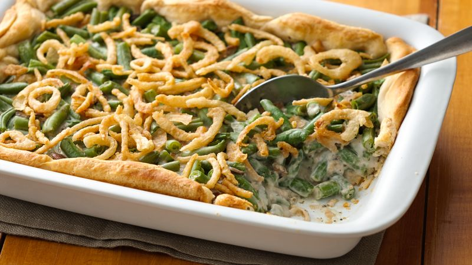

Green Bean Casserole

A classic take on an American favorite!
This is the dish that everyone expects to see on the table during the holidays! I know it's certainly one of my favorites.
This Green Bean Casserole recipe comes from the Campbell's website - tender green beans tossed in cream of mushroom sauce with crispy fried onions sprinkled on top! It pairs wonderfully with a roast turkey or chicken (which is featured in the next recipe!). The secret to making this the perfect side dish is to use fresh string beans and add more fried onions on top!
Ingredients
- 1 can (10 1/2 ounces) Campbell's® Condensed Cream of Mushroom Soup or 98% Fat Free Cream of Mushroom Soup or Condensed Unsalted Cream of Mushroom Soup
- 1/2 cup milk
- 1 teaspoon soy sauce
- 4 cups cooked cut green beans (about 1 1/2 pounds fresh green beans)
- 1 1/3 cups French's® French Fried Onions (amount divided in recipe steps below)
Steps
- Heat the oven to 350°F. Blanch string beans. Stir the soup, milk, soy sauce, beans and 2/3 cup onions in a 1 1/2-quart casserole. Season the mixture with salt and pepper.
- Bake for 25 minutes or until hot. Stir the bean mixture. Sprinkle with the remaining 2/3 cup onions.
- Bake for another 5 minutes or until the onions are golden brown.